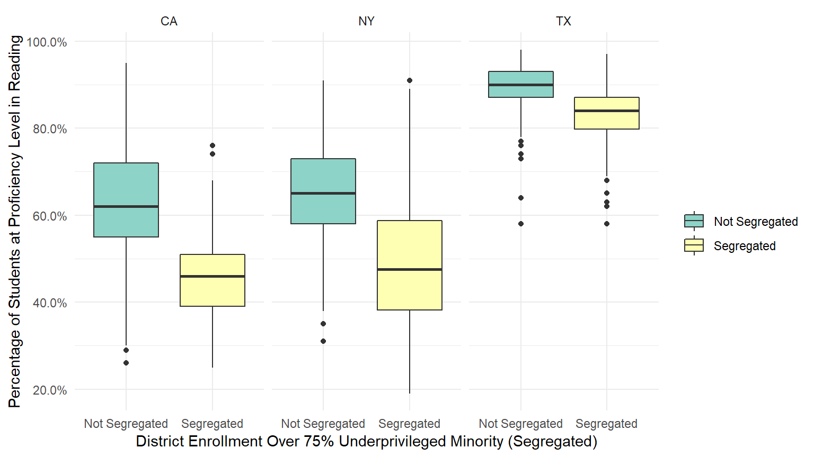

Where Title VI Fails
Uma Gaffney, Cecilia Mendez, and Belise
Last updated on 2018-12-11
library(tidyverse)
library(readr)
library(leaflet)
SCH_truncated <- read_csv("SCH_truncated.csv")
CRDCdistricts <- read_csv("CRDC2013_14_LEA.csv")
maths20112012 <- read_csv("maths20112012.csv")
rla20112012 <- read_csv("rla20112012.csv")
SCH_demo <- SCH_truncated%>%
select(1:5, 8:10, 27:ncol(SCH_truncated)) %>%
mutate(HI = SCH_ENR_HI_M + SCH_ENR_HI_F) %>%
mutate(AM = SCH_ENR_AM_M + SCH_ENR_AM_F) %>%
mutate(AS = SCH_ENR_AS_M + SCH_ENR_AS_F) %>%
mutate(BL = SCH_ENR_BL_M + SCH_ENR_BL_F) %>%
mutate(HP = SCH_ENR_HP_M + SCH_ENR_HP_F) %>%
mutate(WH = SCH_ENR_WH_M + SCH_ENR_WH_F) %>%
mutate(TR = SCH_ENR_TR_M + SCH_ENR_TR_F) %>%
mutate(TOT = TOT_ENR_M + TOT_ENR_F) %>%
mutate(HIprop = HI / TOT) %>%
mutate(BLprop = BL / TOT) %>%
mutate(WHprop = WH / TOT) %>%
mutate(HIBLprop = (HI + BL) / TOT) %>%
mutate(minprop = (HI + AM + BL) / TOT) %>%
mutate(segregated = ifelse(minprop > .75, TRUE, FALSE))
LEA_demo <- SCH_demo %>%
group_by(LEAID) %>%
summarize(HI = sum(HI),
AM = sum(AM),
AS = sum(AS),
BL = sum(BL),
HP = sum(HP),
WH = sum(WH),
TR = sum(TR),
TOT = sum(TOT)) %>%
mutate(HIprop = HI / TOT) %>%
mutate(BLprop = BL / TOT) %>%
mutate(WHprop = WH / TOT) %>%
mutate(HIBLprop = (HI + BL) / TOT) %>%
mutate(minprop = (HI + AM + BL) / TOT) %>%
mutate(mindis = ifelse(minprop > .75, TRUE, FALSE))
#convert district ID to character (necessary for joining)
LEA_demo$LEAID<- as.character(LEA_demo$LEAID)
#make the scores numeric; really annoying that this is necessary
maths20112012$ALL_MTH00pctprof_1112 <- as.numeric(maths20112012$ALL_MTH00pctprof_1112)
maths20112012$MWH_MTH00pctprof_1112 <- as.numeric(maths20112012$MWH_MTH00pctprof_1112)
maths20112012$MHI_MTH00pctprof_1112 <- as.numeric(maths20112012$MHI_MTH00pctprof_1112)
maths20112012$MBL_MTH00pctprof_1112 <- as.numeric(maths20112012$MBL_MTH00pctprof_1112)
rla20112012$ALL_RLA00pctprof_1112 <- as.numeric(rla20112012$ALL_RLA00pctprof_1112)
rla20112012$MWH_RLA00pctprof_1112 <- as.numeric(rla20112012$MWH_RLA00pctprof_1112)
rla20112012$MHI_RLA00pctprof_1112 <- as.numeric(rla20112012$MHI_RLA00pctprof_1112)
rla20112012$MBL_RLA00pctprof_1112 <- as.numeric(rla20112012$MBL_RLA00pctprof_1112)
#join wrangled demographic data to district civil rights and district scores data
joined_districts <- CRDCdistricts %>%
left_join(maths20112012, by = "LEAID") %>%
left_join(LEA_demo, by = "LEAID") %>%
left_join(rla20112012, by = "LEAID")Segregated Districts in America
According to the Department of Education’s Civil Rights data, approximately 20,000 of the nearly 100,000 schools that accept federal funding are more than 75% underprivileged minorities. Of those 20,000 schools, almost 13,000 of them, or about 65%, are in districts that are also more than 75% minority. Because the schools in these districts are generally similar in terms of ethnic breakdown, less than 400 segregated schools and just 11 segregated districts have a formal desegregation order or plan in place. Yet the remaining districts are in need of just as much or more help.
Outcomes for Segregated Districts
#scores by what % district is black or hispanic
joined_districts %>%
filter(LEA_CRCOORD_RAC_IND != "-5") %>%
ggplot(aes(x = HIBLprop, y = ALL_RLA00pctprof_1112 / 100, color = LEA_DESEGPLAN)) +
scale_x_continuous(limits = c(0, 1), labels = scales::percent) +
scale_y_continuous(labels = scales::percent) +
geom_point() +
theme_classic() +
scale_color_manual(values=c("#56B4E9", "orange")) +
labs(x = "Black and Hispanic District Enrollment", y = "Percentage of Students at Proficiency Level in Reading", color = "Formal Desegregation Plan")
joined_districts %>%
filter(mindis != "NA") %>%
ggplot(aes(x = HIBLprop, fill = mindis, y = MBL_RLA00pctprof_1112 / 100)) + geom_boxplot() + theme_classic() + scale_fill_brewer(palette = "Set3", labels = c("Not Segregated", "Segregated")) +
labs(x = "Black and Hispanic District Enrollment", y = "Percentage of Black Students at Proficiency Level in Reading", fill = '"Segregated" District') +
scale_x_continuous(labels = scales::percent) +
scale_y_continuous(labels = scales::percent)